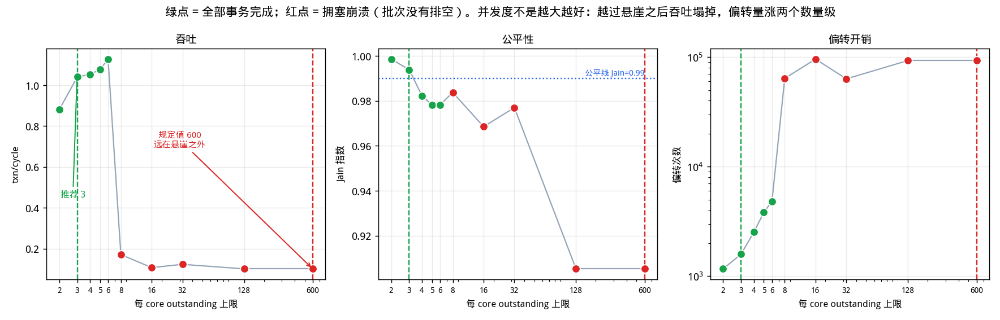
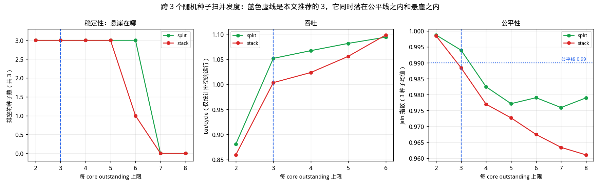
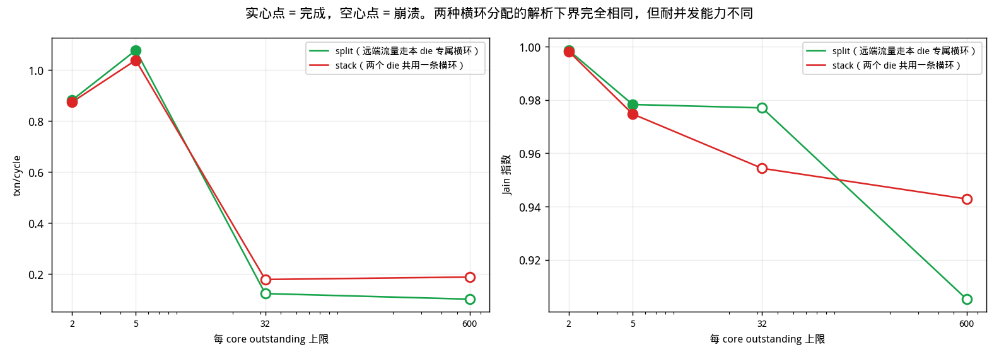
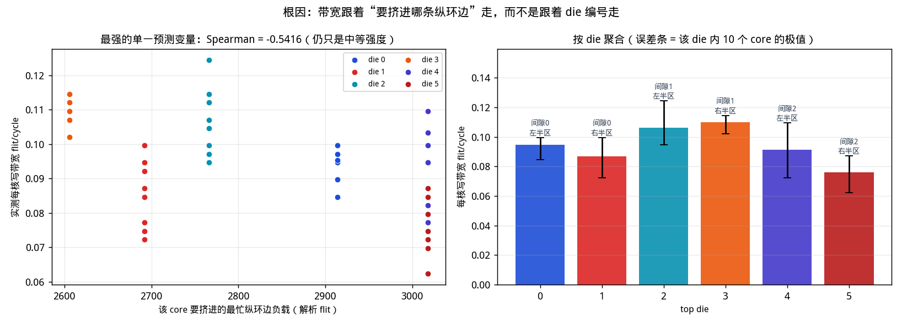
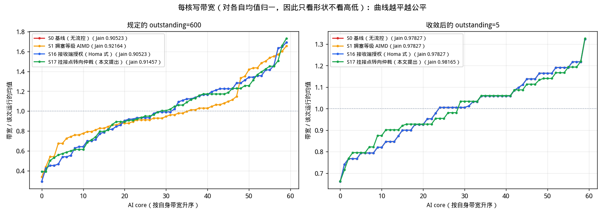

3D 堆叠 NoC 上的 per-core 写带宽公平性
拓扑：6 个 top die（每个 20 节点、双平面、
双向 full ring：10 个 AI core + 8 个 D2D bridge + 2 个非终端节点）
+ 48 条 D2D 链路
+ 1 个 bottom die（96 个 HA，12 行 × 8 列；
6 条横向 + 8 条纵向单向 half ring）。
挂接点按 2 横 × 4 列 = 8 个一组挂到一个 top die；
每个 HA 与一个 D2D bridge 绑定。
workload：60 个 AI core 均匀写 96 个 HA，
每 core 50 笔 WriteNoSnp、每笔 4 个 WriteData
flit，共 3,000 笔事务；每 core outstanding 上限
600。
结论
- 最重要的一条：outstanding = 600 会让这个织物直接拥塞崩溃，
而且没有任何流控方案能救回来。
在规定的 outstanding=600 下，3,000 笔事务只完成
838 笔（28%），
批次根本排不空；把 S1、S16、S17 分别加上去，
四个方案全部崩溃（§7）。
实测的悬崖非常陡：跨 3 个种子，
到 outstanding = 6
为止每个种子都能排空，
而 7 就一个种子都排不空——
中间没有缓慢劣化的过渡带。
也就是说规定值比织物能承受的并发度高了约
100 倍——
60 个 core × 600 =
36,000 笔并发写，而整个 bottom die 的纵向织物
只有 144 条有向链路。
多出来的在途报文不产生任何吞吐，只是变成互相阻塞的偏转流量：
偏转次数从 1,168 涨到
95,839。
- 本次最实用的建议只有一句：把 outstanding 从 600 改成
3，代价为零。
outstanding 上限本来就是一个已有的配置寄存器，改它不花任何硬件。
跨 3 个种子实测，outstanding=3 时：
3/3 个种子全部排空，
吞吐 1.052 txn/cycle
（达理论下界 74.3%），
Jain 0.99399，最差 max/min
1.47——
这是唯一同时满足公平线（Jain ≥ 0.99 且 max/min ≤ 1.5）的可用配置。
而且它几乎不牺牲吞吐：稳定区内的吞吐峰值在
outstanding=6（1.094
txn/cycle），3 已经拿到了它的
96.1%，
但峰值那一档的公平性是不达标的
（Jain 0.97903、max/min 2.17）。
换句话说，把并发度从 600 压到 3
可以几乎免费地换到公平性。
- 路由在这个拓扑上不是可调项——目的地决定了一切。
每个 HA 与一个 D2D bridge 绑定：先确定去哪个 HA，就确定了走哪个 bridge，
两个 die 上的源和目的因此都被钉死，剩下的只是各 die 内部的最短路。
好消息是这个被规定的路由本身就是最好的：
它的下界 2,112 cycle，
比“无视绑定、全局自由最短路”的 3,360 cycle
还要好 1.59 倍，
因为自由最短路会诱导流量提前跨到 bottom die、
把稀缺的纵环当过路通道用（最忙纵向链路达到平均值的
4.54 倍，绑定路由只有
2.84 倍）。
换句话说，上一版报告里“换个路由就能提速”的那条结论在这个拓扑上不成立，
因为路由已经没有自由度了；能动的只有并发度。
- 横环不再是闲置的余量，它承担了一半的流量。
挂接组是 2 横 × 4 列，所以一个 top die 只直接覆盖
4 列中的 4 列；
去另外 4 列的写必须先在横环上走
4 跳换列。
每个 core 的目的地一半近一半远，
于是每笔事务平均在横环上产生
7.96 个 DAT flit·跳、
在纵环上 35.66 个。
横环只有 48 条有向链路（纵环 144 条），
两者的峰值负载已是同一量级，但决定下界的仍然是纵环
（分织物下界：纵 1308 vs 横
871）。
- 残余失衡是结构性的，但它不是某个位置坐标的简单函数。
即使把并发度调到推荐值，位置性失衡依然存在：
outstanding=5 下 Jain = 0.97827，
max/min = 2.00，
每核带宽 0.06227 ~ 0.12453 flit/cycle，
而需求是完全对称的。
把带宽与各结构变量做秩相关，最强的是
“该 core 要并入的最忙那条纵环边的负载”
（Spearman -0.5416，方向正确但只是中等强度），
top die 编号只有 -0.2204，
top 环上的位置只有 -0.0252。
按 die 聚合后最好与最差相差 1.45 倍
（die 3 vs die 5），
但存在反例：die 5 的纵环负载并非最高。
结论是：失衡可复现、可归因于“在环优先”下的并入竞争，
但无法约化成一个静态位置变量——
这正是所有静态流控方案在这里收效有限的原因（§6、§7）。
- 一个免费的拓扑选择：同一行间隙里两条横环怎么分工，会改变耐并发能力。
两种分配搬运的 flit·跳完全相同，解析下界一模一样
（都是 2,112 cycle），
所以任何静态分析都区分不出来。
但实测差别明显：让两个 die 各用一条横环走远端流量（split）
可以稳到 outstanding=5，
而两个 die 共用一条横环（stack）只能稳到 5。
原因是前者让两个 die 在同一列上落在不同的挂接点，
后者把它们挤到同一个挂接点上抢同一条出边。
这条不花任何硬件，只是布线时的一个选择。
- 转向 FIFO 深度不是瓶颈。
把转向/D2D FIFO 从 4/8 加深到
128/256（32 倍），
吞吐只从 0.030 变到 1.053 txn/cycle。
实测转向 FIFO 峰值占用只有 4，
说明不需要为 bottom die 付大缓冲的代价。
- 三个流控方案的结论：S1 能跑但很贵，S16 打不到痛点，
S17 收益不稳定。
在 outstanding=5 上跨 3 个种子：
S1 Jain 均值 0.97904、
S16 0.97904、
S17 0.9797，
基线 S0 0.97904。
S16 的控制点在 HA 侧的授权发放，而瓶颈在纵环的并入仲裁上，
控制点和瓶颈不在一处，所以它的预算在正常负载下几乎不生效（§7.2）；
S17 直接针对挂接点的转向仲裁，机理是对的，
但跨种子看收益不稳定（§7.3）。
没有一个方案比“把 outstanding 调对”更有效，而后者代价为零。
1 拓扑与硬件 setup
1.1 总体结构
| 项目 | 取值 | 说明 |
|---|
| top die 数量 | 6 | 每个是 20 节点、双平面、双向 full ring |
| 每 die 节点角色 | 10 core / 8 D2D bridge / 2 非终端 | 偶数号为 AI core；节点 9、19 既非 core 也非 HA，只转发 |
| AI core 总数 | 60 | 发起方 |
| HA 总数 | 96 | bottom die，12 行 × 8 列 |
| D2D 链路 | 48 | 每 die 8 条，双向，跨 SerDes |
| 挂接点 | 48 | 按“2 横 × 4 列 = 8 个”一组，共 6 组挂 6 个 top die |
| bottom die NoC | 6 横 + 8 纵 half ring | half ring = 单向闭环，仍然回绕，但只走一个方向 |
| 纵环长度 | 18 | 12 个 HA + 6 个挂接点交替排列 |
| 有向链路总数 | 768 | top 480 / D2D 96 / 横 48 / 纵 144 |
| CHI 虚通道 | req / rsp / dat | REQ、RSP、DAT 各自独占链路带宽，互不阻塞 |
| 每笔写的 flit 数 | REQ 1、RSP 2、DAT 4 | WriteNoSnp 四段握手：REQ → DBIDResp → WriteData → Comp |
| 每 core outstanding | 600 | 本次按要求设定；下文会说明它在这个织物上意味着什么 |
| 转向 / D2D FIFO 深度 | 64 / 128 | 唯一允许缓冲的地方；链路本身严格无缓冲 |
| workload | 每 core 50 笔，均匀写全部 96 个 HA | 需求完全对称，任何不均衡都是织物造成的 |
1.2 链路延迟
| 链路 | 延迟 | 说明 |
|---|
| top die 环内链路 | 1 / 2 / 3 / 4 cycle | 共 20 段，按位置不同；两个平面各一份 |
| D2D 跨 die | 4 cycle | SerDes + 跨时钟域，是全网最贵的一跳 |
| bottom die 环内跳 | 1 cycle | 规则阵列，短线 |
| 挂接点内转向 | 1 cycle | 横环 → 纵环，经转向 FIFO |
D2D 一跳 4 cycle，是 bottom die 环内一跳
（1 cycle）的 4 倍。
这个比例很重要：正是它让“按时延自由最短路”倾向于尽早跨 die、
再用便宜的 bottom die 跳挪位置，从而把流量堆到稀缺的纵环上。
绑定路由不给它这个机会。
1.3 挂接点分组：2 横 × 4 列
48 个挂接点分成 6 组、每组 8 个，形状是 2 个挂接行 × 4 列。
每个行间隙有 2 个挂接行 × 8 列 = 16 个挂接点，正好是 2 组，按左右半区切开：
| top die | 所在行间隙 | 挂接列 | 近/远横环 | 本列直落的 bridge | 需换列的 bridge | 换列距离 |
|---|
| top die 0 | 间隙 0 | 0–3 | H1 / H0 | 4 | 4 | 4 跳 |
| top die 1 | 间隙 0 | 4–7 | H0 / H1 | 4 | 4 | 4 跳 |
| top die 2 | 间隙 1 | 0–3 | H3 / H2 | 4 | 4 | 4 跳 |
| top die 3 | 间隙 1 | 4–7 | H2 / H3 | 4 | 4 | 4 跳 |
| top die 4 | 间隙 2 | 0–3 | H5 / H4 | 4 | 4 | 4 跳 |
| top die 5 | 间隙 2 | 4–7 | H4 / H5 | 4 | 4 | 4 跳 |

横向 half ring 仍然跨全部 8 列，
所以同一个行间隙里的两个 die 共用这 2 条横环，
任何一个 die 都可以借横环去到自己组外的列。
1.4 HA 与 D2D bridge 的绑定
每个 HA 与一个 D2D bridge 绑定：先确定去哪个 HA，就确定了走哪个
bridge。一个 die 有 8 个 bridge、要覆盖 96 个 HA，
所以每个 bridge 独占一整列的 12 个 HA。
由于挂接组只落在 4 列上，其中 4 个 bridge 是“本列直落”，
另外 4 个必须先在横环上换列：

这对路由意味着什么。
目的 HA 定了 → bridge 定了 → top die 上的目的（bridge 节点）和
bottom die 上的源（该 bridge 的落点）都定了。
剩下的只是各 die 内部的最短路：
top die 上选环的方向与平面，bottom die 上是被迫的
“横环换列 → 转向 → 纵环下行”。
所以下文所说的“最短路由”，都是在源和目的都被绑定钉死之后的最短路。
2 公平性怎么量：Jain 指数
对 n 个 core 的写带宽 x
1…x
n，Jain 指数定义为
J = (Σxi)² / (n · Σxi²)
取值范围
1/n ~ 1。全部相等时 J = 1；
只有 k 个 core 拿到带宽、其余为 0 时 J = k/n。
它的好处是
与量纲和总量无关——把所有带宽同乘一个系数，J 不变，
所以可以直接比较不同吞吐下的公平性。
本文同时给出另外两个指标，因为 Jain 对少数极端值不够敏感：
max/min（最快 core 与最慢 core 的带宽比，直观但只看两端）和
CoV（标准差／均值，看整体离散度）。
判定一次运行“公平”，本文用的线是
Jain ≥ 0.99 且 max/min ≤ 1.5。
3 理论下界
下界回答的是“无论调度多聪明，这批事务至少要多少 cycle”。
四个来源分别对应四种资源，取最大者：
| 下界来源 | cycle | 含义 |
|---|
| 链路下界（分 VC 取最大） | 2,112 | 最忙的一条有向链路上、单个 VC 需要搬运的 flit 数 |
| └ 分 VC 明细 | dat 2,112 / req 528 / rsp 1,222 | DAT 是 4 flit/笔，通常是它决定链路下界 |
| 端口下界 | 250 | 某个站点注入或弹出端口的总需求（各 VC 合并，端口只有一个） |
| └ 分织物明细 | d2d 219 / h 871 / top 218 / v 1,308 | 纵环 144 条、横环 48 条，横环少但只承担换列流量 |
| 织物切割下界 | 1,308 | 某类织物的总 flit·跳 ÷ 该类链路数 |
| 单事务时延下界 | 191 | 一笔写的四段握手串行时延，与并发无关 |
| 综合下界 | 2,112 | 以上四者取最大 |
注意各 VC 独立占用链路带宽，所以链路下界是
各 VC 取最大而不是求和。
DAT 每笔 4 flit，通常由它决定。
3.1 被规定的路由 vs 假想的自由路由
| 路由策略 | 下界(cycle) | 上限 txn/cycle | 平均正向跳数 | 每笔 DAT 的纵/横 flit·跳 | 最忙纵向链路 / 平均 |
|---|
| 目的地绑定路由（硬件规定） | 2,112 | 1.4205 | 16.87 | 35.66 / 7.96 | 2.84× |
| 自由最短路径（按时延，不可实现） | 3,360 | 0.8929 | 13.59 | 35.54 / 10.0 | 4.54× |
| 自由最短路径（按跳数，不可实现） | 2,528 | 1.1867 | 13.22 | 35.43 / 7.34 | 3.42× |
被绑定的路由反而是最好的。
自由最短路（无视绑定，因此在这个硬件上不可实现，
列出来只是为了量化绑定的代价）下界更差：
它的平均跳数更短（13.59 vs 16.87 跳），
却把最忙纵向链路推到平均值的 4.54 倍
（绑定路由 2.84 倍）。
决定性能的是负载均衡，不是路径长度——
这一点与上一版报告一致，但结论的方向反了：
这里不需要去“改路由”，硬件规定的路由已经是好的那个。
3.2 纵环上的负载分布

纵环是单向闭环，注入点（虚线）之后负载抬升。
左半区列和右半区列的注入位置不同，
因为一列被“拥有它的 die”从近端横环直落、
被“需要换列的 die”从远端横环进入。
4 现象：规定的并发度下发生了什么
| 方案 | 批次是否排空 | 完成事务 | makespan | 达下界比例 | Jain | max/min | CoV | 偏转次数 |
|---|
| S0 基线（无流控） | 拥塞崩溃 | 838 / 3,000 | 8,273 | 25.5% | 0.90523 | 5.80 | 0.3236 | 93,000 |
| S1 拥塞等级 AIMD | 拥塞崩溃 | 785 / 3,000 | 6,782 | 31.1% | 0.92164 | 4.90 | 0.2916 | 76,467 |
| S16 接收端授权（Homa 式） | 拥塞崩溃 | 838 / 3,000 | 8,273 | 25.5% | 0.90523 | 5.80 | 0.3236 | 93,000 |
| S17 挂接点转向仲裁（本文提出） | 拥塞崩溃 | 777 / 3,000 | 6,794 | 31.1% | 0.91457 | 4.43 | 0.3056 | 78,614 |
怎么读这张表。
“批次是否排空”是最关键的一列：
崩溃的运行里 makespan 只是停滞检测器截断的时刻，
不是真正的完成时间，所以此时的 Jain、max/min
描述的是“一个卡住的织物内部谁还在动”，
不能当作公平性的正面结论来用。
这就是为什么第 5 节要先把并发度调到织物能承受的范围，
再去谈公平性。
4.1 outstanding = 600 到底有没有生效
一个 core 只提交 50 笔写，所以在这个批次里
“在途上限 600”其实永远碰不到——
上限高于批量时，它和“无上限”是同一件事。
下面把批量逐步加大，看实测在途峰值和结论是否改变：
| 每 core 批量 k | 实测在途峰值 | 上限是否真正生效 | 批次是否排空 | 完成事务 | txn/cycle |
|---|
| 50（3,000 笔） | 50 | 否 | 拥塞崩溃 | 838 / 3,000 | 0.038 |
| 100（6,000 笔） | 100 | 否 | 拥塞崩溃 | 1,510 / 6,000 | 0.071 |
| 200（12,000 笔） | 200 | 否 | 拥塞崩溃 | 3,007 / 12,000 | 0.133 |
在途峰值始终等于批量 k、从未接近 600，
而织物每一档都是崩溃的。
这正说明问题不在“600 这个数字有没有被触发”，
而在于织物的饱和点低到 6 左右：
core 还远没用到自己的额度，织物就已经塌了。
所以 outstanding=600 在这里的实际含义就是“不设限”，
而不设限的后果见上表。
5 把并发度作为唯一自由变量
路由被绑定钉死、FIFO 深度不是瓶颈（§5.3），
所以设计上真正能动的只剩一个数：每 core 的 outstanding 上限。
先看单种子的全景扫描：

| outstanding | 批次是否排空 | makespan | txn/cycle | 达下界比例 | Jain | max/min | 偏转次数 |
|---|
| 2 | 完成 | 3,405 | 0.881 | 62.0% | 0.99861 | 1.19 | 1,168 |
| 3 | 完成 | 2,883 | 1.041 | 73.3% | 0.99389 | 1.52 | 1,593 |
| 4 | 完成 | 2,848 | 1.053 | 74.2% | 0.98228 | 1.92 | 2,532 |
| 5 ← 推荐 | 完成 | 2,785 | 1.077 | 75.8% | 0.97827 | 2.00 | 3,826 |
| 6 | 完成 | 2,659 | 1.128 | 79.4% | 0.9783 | 2.00 | 4,820 |
| 8 | 拥塞崩溃 | 7,904 | 0.171 | 26.7% | 0.98373 | 2.14 | 63,892 |
| 16 | 拥塞崩溃 | 7,622 | 0.107 | 27.7% | 0.96853 | 2.25 | 95,839 |
| 32 | 拥塞崩溃 | 6,815 | 0.123 | 31.0% | 0.97701 | 1.94 | 63,284 |
| 128 | 拥塞崩溃 | 8,273 | 0.101 | 25.5% | 0.90523 | 5.80 | 93,000 |
| 600 ← 题目规定 | 拥塞崩溃 | 8,273 | 0.101 | 25.5% | 0.90523 | 5.80 | 93,000 |
注意崩溃档的 Jain 不可信。
崩溃的运行里 makespan 是停滞检测器截断的时刻，
此时 Jain 反映的是“卡住的织物里谁还在动”。
例如 outstanding=8 那一档 Jain 看起来有
0.98373，
但它只完成了不到两成事务——不能拿来和排空的运行比较。
所以下面用跨种子的“是否排空”来定结论。
5.1 跨种子定位悬崖与推荐值

| outstanding | 排空的种子数 | txn/cycle | 达下界比例 | Jain 均值 | Jain 最差 | max/min 最差 | 是否满足公平线 |
|---|
| 2 | 3 / 3 | 0.881 | 62.2% | 0.99877 | 0.99864 | 1.22 | 达标 |
| 3 ← 推荐 | 3 / 3 | 1.052 | 74.3% | 0.99399 | 0.99314 | 1.47 | 达标 |
| 4 | 3 / 3 | 1.067 | 75.4% | 0.98247 | 0.98042 | 2.00 | 未达标 |
| 5 | 3 / 3 | 1.082 | 76.4% | 0.97715 | 0.9744 | 1.92 | 未达标 |
| 6 | 3 / 3 | 1.094 | 77.3% | 0.97903 | 0.97768 | 2.17 | 未达标 |
| 7 | 0 / 3 | — | — | 0.97593 | 0.96924 | 2.10 | 未达标 |
| 8 | 0 / 3 | — | — | 0.97898 | 0.97481 | 2.10 | 未达标 |
这是本文最实用的一张表。
悬崖极陡：6 全排空、
7 全崩溃，中间没有过渡。
但“能排空”不等于“公平”：
到 6 时吞吐最高
（1.094 txn/cycle），
Jain 却只有 0.97903、max/min 2.17，
达不到公平线。
同时满足两者的最大并发度是 3：
Jain 0.99399、max/min 1.47、
吞吐 1.052 txn/cycle
（峰值的 96.1%）。
这就是推荐值，代价是一个已有寄存器的取值。
5.2 各方案在推荐并发度附近的跨种子表现
| 方案 | 排空的种子数 | Jain 均值 | Jain 最差 | max/min 最差 | 达下界比例最差 |
|---|
| S0 基线（无流控） | 3 / 3 | 0.97904 | 0.97798 | 2.17 | 74.1% |
| S1 拥塞等级 AIMD | 3 / 3 | 0.97904 | 0.97798 | 2.17 | 74.1% |
| S16 接收端授权（Homa 式） | 3 / 3 | 0.97904 | 0.97798 | 2.17 | 74.1% |
| S17 挂接点转向仲裁（本文提出） | 3 / 3 | 0.9797 | 0.97835 | 2.17 | 74.8% |
上表在 outstanding=5 上跑。
S0、S1、S16 三行完全一样——这不是笔误：
并发度已经压到织物的舒适区之后，
S1 的 AIMD 和 S16 的授权预算都从不触发，
它们的硬件在这个工作点上是纯粹的死重。
5.3 一个免费的拓扑选择：横环分工

| 横环分配 | outstanding | 下界 | 批次是否排空 | txn/cycle | Jain | max/min | 各 die 进入列 0 的位置 |
|---|
| split | 2 | 2,112 | 完成 | 0.881 | 0.99861 | 1.19 | d0→v2,d1→v2,d2→v9,d3→v9,d4→v16,d5→v16 |
| split | 5 | 2,112 | 完成 | 1.077 | 0.97827 | 2.00 | d0→v2,d1→v2,d2→v9,d3→v9,d4→v16,d5→v16 |
| split | 32 | 2,112 | 拥塞崩溃 | 0.123 | 0.97701 | 1.94 | d0→v2,d1→v2,d2→v9,d3→v9,d4→v16,d5→v16 |
| split | 600 | 2,112 | 拥塞崩溃 | 0.101 | 0.90523 | 5.80 | d0→v2,d1→v2,d2→v9,d3→v9,d4→v16,d5→v16 |
| stack | 2 | 2,112 | 完成 | 0.874 | 0.99818 | 1.22 | d0→v1,d1→v2,d2→v8,d3→v9,d4→v15,d5→v16 |
| stack | 5 | 2,112 | 完成 | 1.038 | 0.97471 | 1.85 | d0→v1,d1→v2,d2→v8,d3→v9,d4→v15,d5→v16 |
| stack | 32 | 2,112 | 拥塞崩溃 | 0.179 | 0.95432 | 3.75 | d0→v1,d1→v2,d2→v8,d3→v9,d4→v15,d5→v16 |
| stack | 600 | 2,112 | 拥塞崩溃 | 0.188 | 0.94284 | 3.50 | d0→v1,d1→v2,d2→v8,d3→v9,d4→v15,d5→v16 |
两种分配的解析下界完全相同，
静态分析无法区分；但 split（两个 die 各用一条横环走远端流量）
让它们在同一列上落在不同挂接点，
耐并发能力比 stack 更好。
这提示一类只有仿真才能发现的设计点：
总量相同、分布不同。
5.4 转向 FIFO 深度
| 转向 / D2D FIFO 深度 | 批次是否排空 | makespan | txn/cycle | Jain | 转向 FIFO 峰值占用 | 偏转次数 |
|---|
| 4 / 8 | 拥塞崩溃 | 6,887 | 0.030 | 0.8764 | 4 | 66,374 |
| 16 / 32 | 拥塞崩溃 | 7,253 | 0.081 | 0.95304 | 16 | 71,685 |
| 64 / 128 | 完成 | 2,785 | 1.077 | 0.97827 | 64 | 3,826 |
| 128 / 256 | 完成 | 2,849 | 1.053 | 0.98016 | 128 | 2,119 |
6 根因分析

| 结构变量 | Spearman(变量, 每核带宽) | 说明 |
|---|
| seat_max | -0.542 | 最强的单一预测变量：该 core 要并入的最忙那条纵向边上已有多少上游流量 |
| seat_pearson | -0.423 | 平均纵环边负载的线性相关程度 |
| seat | -0.389 | 平均（而非最忙）纵环边负载 |
| die | -0.220 | 计划里的假设。数值很小，说明不是按 die 编号排序 |
| far_vpos | -0.220 | 换列后进入的挂接点位置 |
| half | -0.195 | 左半区(0) 还是右半区(1) |
| gap | -0.171 | 0/1/2，即纵环上的三段 |
| h_hops | -0.120 | 每个 core 都是一半近一半远，本来就没有区分度 |
| near_vpos | -0.106 | 本列直落的挂接点位置 |
| top_idx | -0.025 | core 在 top 环上的序号；top 环容量过剩，影响最小 |
为什么“top die 编号”这次没有解释力。
上一版拓扑里每个 die 在所有列上都从同一个纵向位置注入，
位置优势在所有目的地上是一致的，因此能按 die 排序。
现在挂接组是 2 横 × 4 列：
同一个 die 对自己的 4 列从近端横环直落、
对另外 4 列要换列后从远端横环进入，
一个 die 不再只有一个纵向位置，
优势在目的地之间被平均掉了——
这就是 Spearman(die 编号, 带宽) 只有 -0.2204 的原因。
需要如实说明的一点：没有任何单一静态变量能解释这个失衡。
最强的预测变量是“要并入的最忙那条纵环边的负载”，
Spearman = -0.5416——方向正确
（要挤的边越忙、拿到的带宽越少），但只是中等强度。
下面按 die 聚合的表里就能看到反例：
die 5 的纵环边负载并不是最高的，带宽却最低。
也就是说，可以确认失衡是结构性的、可复现的
（3 个种子都在），但它不是某个位置坐标的简单函数：
剩下的部分来自“在环优先”这条规则的动态后果——
一个 flit 能不能并入，取决于那一拍环上恰好有没有流量，
而这又被上游所有注入点的相位关系决定。
这也解释了为什么 §7 里所有静态的流控方案都收效有限。
6.1 按 die 聚合
| top die | 行间隙 | 挂接列 | 近/远横环 | 近/远注入 vpos | 平均纵环边负载 | core 数 | 带宽均值 | 最小 | 最大 |
|---|
| top die 0 | 0 | 左 0–3 | H1 / H0 | v2 / v1 | 1664.8 | 10 | 0.09446 | 0.08468 | 0.09963 |
| top die 1 | 0 | 右 4–7 | H0 / H1 | v1 / v2 | 1435.2 | 10 | 0.08692 | 0.07223 | 0.09963 |
| top die 2 | 1 | 左 0–3 | H3 / H2 | v9 / v8 | 1590.4 | 10 | 0.1061 | 0.09465 | 0.12453 |
| top die 3 | 1 | 右 4–7 | H2 / H3 | v8 / v9 | 1410.5 | 10 | 0.10984 | 0.10212 | 0.11457 |
| top die 4 | 2 | 左 0–3 | H5 / H4 | v16 / v15 | 1609.3 | 10 | 0.09128 | 0.07223 | 0.10959 |
| top die 5 | 2 | 右 4–7 | H4 / H5 | v15 / v16 | 1632.3 | 10 | 0.07596 | 0.06227 | 0.08717 |
最好的 die 3（0.10984）与最差的
die 5（0.07596）相差 1.45 倍。
注意“平均纵环边负载”这一列并不与带宽单调对应，
正是上面那段说的反例。
7 流控方案
| 方案 | 批次是否排空 | 完成事务 | makespan | 达下界比例 | Jain | max/min | CoV | 偏转次数 |
|---|
| S0 基线（无流控） | 完成 | 3,000 / 3,000 | 2,785 | 75.8% | 0.97827 | 2.00 | 0.1490 | 3,826 |
| S1 拥塞等级 AIMD | 完成 | 3,000 / 3,000 | 2,785 | 75.8% | 0.97827 | 2.00 | 0.1490 | 3,826 |
| S16 接收端授权（Homa 式） | 完成 | 3,000 / 3,000 | 2,785 | 75.8% | 0.97827 | 2.00 | 0.1490 | 3,826 |
| S17 挂接点转向仲裁（本文提出） | 完成 | 3,000 / 3,000 | 2,776 | 76.1% | 0.98165 | 2.00 | 0.1367 | 4,193 |

7.1 S1：拥塞等级 + AIMD
每个节点统计本地拥塞等级，经专用旁路总线（不占 NoC）广播，
源端按 AIMD 调整注入速率。
实测它在 outstanding=5 下能跑，
跨种子 Jain 均值 0.97904、最差 max/min
2.17。
代价是要一条覆盖全芯片、跨 die 的广播网
（68,112 bit
广播总量），在 3D 堆叠里尤其贵。
7.2 S16：Homa 式接收端授权
思路是把 CHI 的 DBIDResp 直接当作 Homa 的 grant 用：
HA 按“最少服务优先”配额发放 DBIDResp，
用 overcommit 控制同时在飞的授权数。
好处是不新增报文类型，完全落在 CHI 语义内。
| overcommit | 批次是否排空 | makespan | Jain | max/min | 授权峰值 | HA 侧缓冲峰值(flit) | 授权等待均值 | 网络时延 p99 |
|---|
| 1 | 完成 | 3,600 | 0.86477 | 7.14 | 1 | 4 | 155.2 | 1361 |
| 2 | 完成 | 2,795 | 0.97582 | 1.92 | 2 | 8 | 103.6 | 873 |
| 4 | 完成 | 2,802 | 0.98036 | 2.08 | 4 | 16 | 55.1 | 712 |
| 8 | 完成 | 2,737 | 0.98019 | 1.92 | 8 | 32 | 14.0 | 700 |
| 16 | 完成 | 2,785 | 0.97827 | 2.00 | 10 | 40 | 0.0 | 703 |
| 64 | 完成 | 2,785 | 0.97827 | 2.00 | 10 | 40 | 0.0 | 703 |
为什么在这个拓扑上不奏效。
S16 的控制点是 HA 侧的授权发放，
而瓶颈是纵环上的并入仲裁——
一个 flit 能不能从挂接点挤进纵环，取决于那条边上有没有在环流量，
与 HA 发了多少授权无关。
控制点和瓶颈不在同一处，
所以把 overcommit 放宽到 64
时它与基线几乎没有差别，
收紧到 1 才开始限流，
而那时限的其实是并发度——也就是用一套状态机去做
outstanding 寄存器已经能做的事。
7.3 S17：挂接点转向仲裁（本文提出）
既然瓶颈是并入仲裁，就直接改仲裁：
挂接点的转向 FIFO 连续被阻塞 turn_patience 拍之后，
获得一次对在环流量的优先权，用一个 1 flit 的闩实现。
这是唯一直接命中瓶颈机理的方案，也是最便宜的织物侧改动。
| turn_patience | 批次是否排空 | makespan | Jain | max/min | 转向让行次数 | 被闩住的 flit·cycle | 网络时延 p99 |
|---|
| 0（等于基线） | 完成 | 2,785 | 0.97827 | 2.00 | 0 | 0 | 703 |
| 1 | 完成 | 2,781 | 0.9825 | 1.92 | 13,930 | 1 | 674 |
| 2 | 完成 | 2,761 | 0.97801 | 2.06 | 10,468 | 1 | 690 |
| 4 | 完成 | 2,749 | 0.97692 | 2.00 | 5,463 | 1 | 668 |
| 8 | 完成 | 2,776 | 0.98165 | 2.00 | 2,721 | 1 | 684 |
| 16 | 完成 | 2,779 | 0.98149 | 2.00 | 1,204 | 1 | 696 |
实测结论要说清楚。
在单个种子上，patience=1 把 Jain 从
0.97827 提到 0.9825，看起来是有效的；
但跨 3 个种子它的均值是
0.9797，相对基线 0.97904
并不构成稳定收益。
机理是对的，收益不稳定，因此本文不把它作为推荐方案；
如果要继续做，方向是让让行的判据带上下游负载信息，
而不只是本地饥饿计数。
8 代价对比
| 方案 | 存储/逻辑代价 | 带宽代价 | 额外互连 | 运行时状态 | 评价 |
|---|
| S0 基线 | 0 | 0 | 无 | 无 | 已有 outstanding 计数器之外不加任何东西 |
| 把 outstanding 调到推荐值 | 0 | 0 | 无 | 无 | 改一个已经存在的配置寄存器，是本文唯一推荐的动作 |
| S1 拥塞等级 AIMD | 264 个节点各 1 个拥塞等级寄存器 | 68,112 bit 广播总量 | 专用旁路总线（不占 NoC） | 每源平均 123.0 个受控节点 | 要一条覆盖全芯片的广播网，跨 die 还要过 D2D |
| S16 接收端授权 | 96 个 HA 各 1 套授权状态机 + 请求表 | HA 侧缓冲峰值 40 flit | 无额外网络 | 授权峰值 10 | 把 DBIDResp 当授权用，不新增报文类型 |
| S17 挂接点转向仲裁 | 48 个挂接点各 1 个饥饿计数器 + 1 flit 闩 | 0 | 无 | 纯本地，无通信 | 最便宜的织物侧改动，但见下文的实测结论 |
一句话建议。
在这个拓扑上，路由已经被 HA↔bridge 绑定钉死，不是可调项；
转向 FIFO 深度不是瓶颈；三个流控方案都没有稳定收益。
唯一既有效、又免费的动作是把每 core 的 outstanding 从
600 调到 3：
批次从“永远排不空”变成全部排空，
吞吐 0.101 → 1.052 txn/cycle
（10 倍），
公平性 Jain 0.90523 → 0.99399、
max/min 5.80 → 1.47。
如果还有布线自由度，再顺手选 split 式的横环分工。
9 复现
python3 utils/dse_stack_write_fair.py --k 50
--seeds 0 1 2 --oc-work 5
python3 utils/gen_stack_write_report.py
python3 utils/verify_stack.py（拓扑、守恒、方案不变量的回归检查）
仿真总耗时 1241 s。
所有崩溃判定都以“批次是否排空”为准，
停滞检测阈值 6000 cycle。